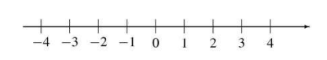
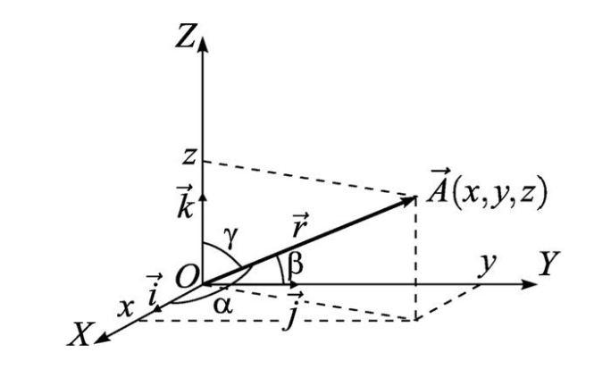

Хорошо известно, что физические законы записываются в форме математических выражений. Эти выражения позволяют придать физическим законам более совершенную форму по сравнению со словесными определениями. Таким образом, математика является как бы более совершенным языком физики. Но, что еще более важно, с помощью правил обращения с математическими величинами можно получать многочисленные следствия известных физических законов и находить новые факты, которые в свою очередь допускают экспериментальную проверку. Опытной проверкой следствий законов природы и поиском новых опытных фактов занимается экспериментальная физика. Объяснение известных экспериментальных фактов, формулировка законов природы, а также поиск и предсказание новых эффектов проводятся физиками-теоретиками. Изучение физики предполагает выяснение как экспериментальных предпосылок создания физических теорий, так и анализ их следствий. Поэтому знание основных понятий, формул и методов математики, а также умение проводить простейшие математические преобразования становятся необходимыми атрибутами, определяющими успешное усвоение физических представлений.
Числа, используемые для характеристики физических величин, составляют множество действительных чисел. Их можно отобразить на прямой, простирающейся от –∞ до ∞:

На этой прямой располагаются не только обозначенные на рисунке точки, представляющие целые положительные и отрицательные числа, но и рациональные числа, которые представимы в виде \( r = \frac{p}{q} \), где \( p \) и \( q \) — целые числа, а также иррациональные числа, которые представимы бесконечными непериодическими десятичными дробями (как, например, \( \sqrt{2} \), \( \sqrt{5} \), а также числа \( e \), \( \pi \) и др.). Отметим, что целые, рациональные и иррациональные числа образуют соответствующие подмножества множества действительных чисел.
Любой вектор характеризуется как направлением, так и своим численным значением. Положение заданной точки \( A \) в пространстве относительно выбранной системы отсчета задается радиусвектором \( \mathbf{r} \), соединяющим начало координат с точкой \( A \).

При определении векторов чаще всего применяется прямоугольная (декартова) система координат, базис которой образуют три взаимно перпендикулярных (ортогональных) вектора \( \vec{i} \), \( \vec{j} \), \( \vec{k} \) единичной длины, проведенных из одной и той же точки (начала координат). Любой вектор \( \vec{r} \) можно разложить по базису: \( \vec{r} = x \vec{i} + y \vec{j} + z \vec{k} \), при этом числа \( x \), \( y \), \( z \) называются координатами вектора в декартовой системе координат.
При переносе вектора параллельно самому себе его значение не меняется. Длина вектора (или, что то же самое, его модуль) определяется по теореме Пифагора
Если \( \alpha \), \( \beta \), \( \gamma \) — углы, которые составляет вектор \( \vec{r} \) с осями \( OX \), \( OY \), \( OZ \), то \( \cos \alpha \), \( \cos \beta \), \( \cos \gamma \) называют направляющими косинусами вектора \( \vec{r} \).
Справедливы формулы:
\( x = r\cos \alpha, \quad y = r\cos \beta, \quad z = r\cos \gamma, \quad \cos^2 \alpha + \cos^2 \beta + \cos^2 \gamma = 1 \).
Проекцией вектора \( \vec{a} \) на произвольную плоскость \( s \), образующую с вектором \( \vec{a} \) угол \( \psi \), называется величина \( |\vec{a}_s| = |\vec{a}| \cos \psi \).
Векторы называются коллинеарными, если они лежат на одной прямой или параллельных прямых (обозначение \( \uparrow \uparrow \) \( \vec{a} \vec{b} \), если векторы одинаково направлены, и \( \uparrow \downarrow \) \( \vec{a} \vec{b} \) — если векторы направлены в противоположные стороны).
Три и более векторов называются компланарными, если они лежат в одной плоскости или в параллельных плоскостях.
Произведением вектора \( \vec{a} \) на число \( m \) называется такой вектор \( \vec{ma} \), что \( |\vec{ma}| = |m| |\vec{a}| \) и \( \uparrow \uparrow \) \( \vec{ba} \) при \( m > 0 \), \( \uparrow \downarrow \) \( \vec{ba} \) при \( m < 0 \).
Если угол между векторами острый, то их скалярное произведение положительно, если же тупой — отрицательно. Если угол между векторами прямой, то их скалярное произведение равно нулю.
Скалярное произведение векторов \( \vec{a} = \{x_1, y_1, z_1\} \) и \( \vec{b} = \{x_2, y_2, z_2\} \) можно вычислить по формуле: \[ (\vec{a}, \vec{b}) = x_1x_2 + y_1y_2 + z_1z_2 \]
С помощью скалярного произведения по формулам (*) и (**) можно вычислить косинус между векторами, а следовательно, и сам угол.
1.2.5. Векторное произведениеНекомпланарная тройка векторов \( \vec{a} \), \( \vec{b} \) и \( \vec{c} \) называется правой (или левой), если после приведения к общему началу кратчайший поворот от первого вектора \( \vec{a} \) ко второму вектору \( \vec{b} \) виден из конца третьего вектора \( \vec{c} \) совершающимся по часовой стрелке (или против часовой стрелки).